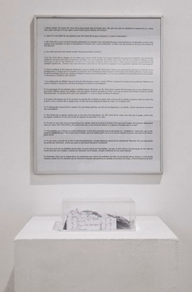

(From the series: Annotations to an Eisegesis)
38 handwritten paper sheets broken in 1330 pieces, methacrylate box
(14.5 x 19.5 x 7.5 cms), 16 unanswered questions
2012
Postfacio, 8th Leandre Cristòfol Art Biennial , La Panera Art Center, Lérida
The 10th of October of 2011 I watched The Turin Horse, an apocalyptic hungarian movie that shocked me. Four months later, in February 2012, I had the chance to interview Béla Tarr, director of this filme. Unexpectedly, the interview was cancelled and all the questions remained without answer. On February 26th, I decided to watch that movie four times (584 minutes), writing continously and trying to find the answer to these questions. After handwriting 38 paper sheets, I broke them in 1330 pieces and put them inside a methacrylate box.